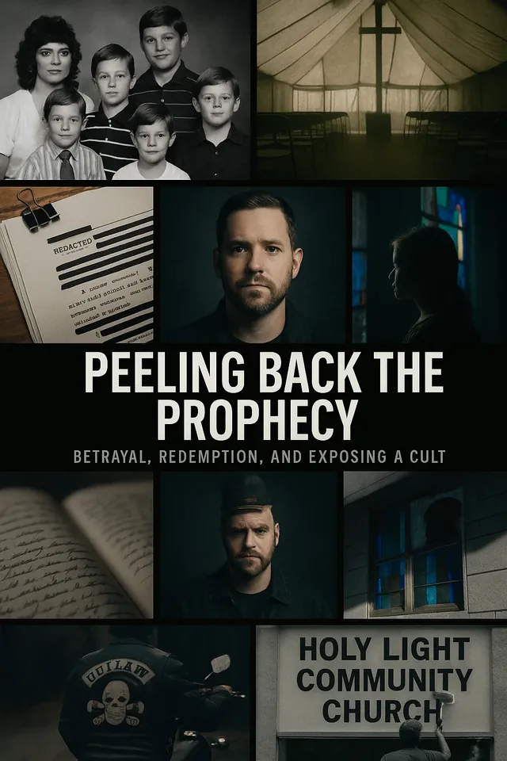
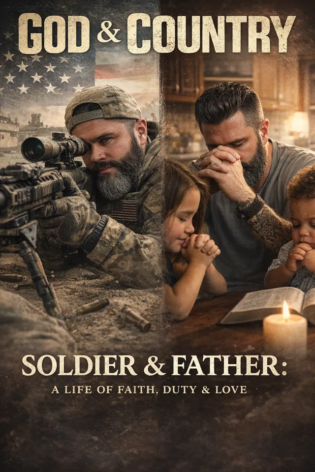
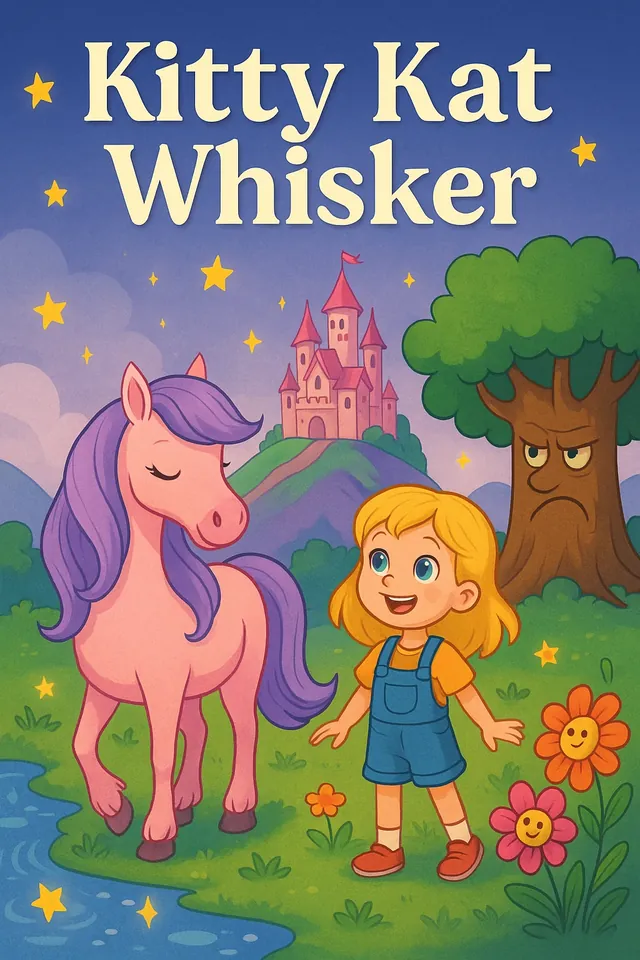

Art
Creating space for people to express what they can't always say out loud, with paint, pen, image, or anything else that works.
Brave Art Initiative
We help people find their voice through art, storytelling, and real conversation, and turn pain into purpose.
The mission
Some things are too heavy to say out loud. Art gives them somewhere to go.
Creating space for people to express what they can't always say out loud, with paint, pen, image, or anything else that works.
Owning your past without living in it. Telling the true story is how the cycle starts to break.
Raw, honest talk about trauma, identity, fatherhood, and rebuilding. No polish required.
Founder
Drew went from high-level purpose in the military to coming home completely lost. He didn't understand what combat, blasts, stress, and survival mode had done to his nervous system. He coped the wrong way and made mistakes, and he owns that.
He also learned this: no matter how far off track you get, you can rebuild.
Brave Art Initiative is what he built for veterans coming home lost, for survivors carrying what they can't put into words, and for every parent working to break the cycle.
“I didn't find peace when I came home. I had to build it.”
Projects
Books and series born from the same mission: tell the truth, break the cycle, build something better.

Betrayal, redemption, and exposing a cult.

Soldier & Father: a life of faith, duty & love.

A children's picture book.
Podcast guest
Real story. Real growth. Real impact.
Message @notreallysuredrewFollow along, share the mission, and reach out if you want to help as a partner, a volunteer, or a voice.